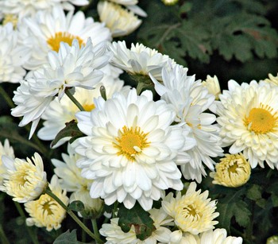
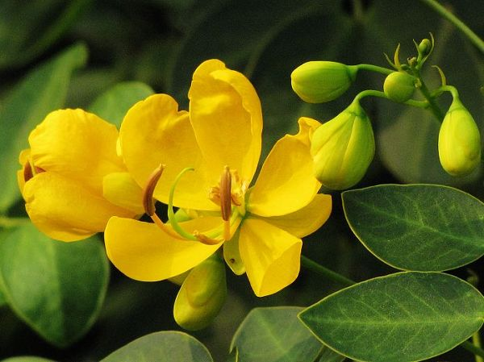

I believe, that in every corner of this world, flowers resemble something that is good, nice, positive...
and of course sometimes, a remedy for some deseases.
This is a place where I recorded some of the flowers plant, that at the same time a medicine use in Chinese Traditional remedy. Nothing much, but something interesting.
|
Magnolia liliiflora |

Chrysanthemum morifolium |
Bupleurum chinense |
|
Gardenia jasminoides |

Senna obtusifolia |
Lonicera japonica |
Click on the pictures to see more about these flowers!